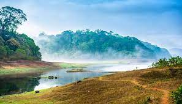
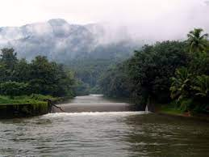
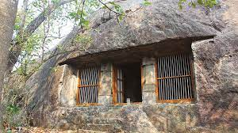
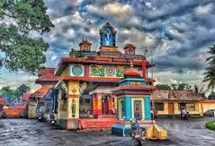

Perunthenaruvi Wildlife
It is a popular tourist destination situated in Vechoochira Panchayat of Ranni taluk. The one shore of this waterfall is Kudamurutty and Vechoochira is the other. The main route to this waterfall starts from Ranni - Athikkayam - Kudamurutty - Perunthenaruvi. It is a fine place to spend time with family in a very serene atmosphere.

Gavi
Gavi is an Eco-Tourism a project of the Kerala Forest Development Corporation located in Pathanamthitta district, Kerala. Gavi, located in Pathanamthitta district offers its visitors activities like trekking, wildlife watching, outdoor camping in specially built tents, and night safaris. Distance from Pathanamthitta To Gavi is 109 km 428 mtrs & Travel Time is 2 hour 5 mins By Road. Gavi is 14 km south west of Vandiperiyar, 28 km from Kumily,

Thriveni Sangamam
Triveni Sangamam rests on the way to Sabrimala. The devotees halt in this place while going to Sabarimalai.In this place devotees to take a holy dip in it for redemption. Therefore, it can be termed as the important halting place devotees who travel to sabarimala. Triveni Sangamam implies the meeting point of three rivers. This is the position where the Holy Pamba river confluence with the Manimala River in its north and the Achankovil River in the south.

Kaviyoor Rock Temple
The Kaviyoor Thrikkakkudi Cave Temple, popularly known as the Rock Cut Cave Temple is an ancient temple carved on a massive rock located at Kaviyoor near Thiruvalla in the Pathanamthitta district. Dedicated to Lord Shiva, this temple is also having archaeological importance because of its close similarity to the Pallava style of architecture. Besides devotees, many historians and travelers visit this rock-cut temple in order to watch its stone engravings. As the earliest specimens of the stone sculpture of the state, this temple holds great archaeological significance.

Sree Vallabha Temple
Sreevallabha Temple is a highly orthodox[1] Hindu temple dedicated to Lord Sreevallabhan.[2] It is one of the oldest and biggest Temples of Kerala, and has been a major destination for devotees all over India for centuries. Located in Thiruvalla city, this ocean of orthodoxy is well known for its architectural grandeur and unique customs[2] that can be found in no other temples. There are stone-wooden carvings and mural paintings inside the temple. Being one among 108 Divya Desams,[3][4] Sreevallabha temple has been glorified by Alvars and many other ancient works.